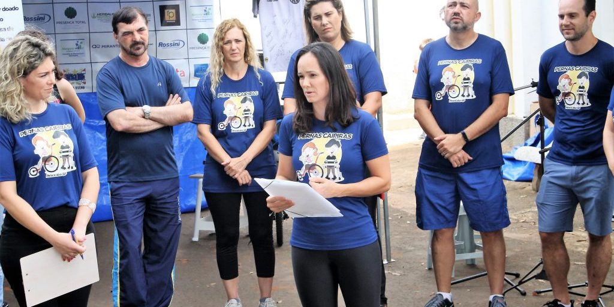

2ª Caminhada Inclusiva do HFC Saúde
Concentração em frente ao HFC Onco, com entrega de medalhas aos conduzidos nos triciclos.
Saiba maisVoluntários emprestam suas pernas, coração e motivação para que pessoas com deficiência participem de corridas de rua em triciclos adaptados — construindo uma ponte de relacionamento entre pessoas com e sem deficiência.

Em 2025, o projeto completou cinco anos e foi reconhecido com moção de aplausos pela Câmara de Vereadores de Piracicaba.
Fonte: Câmara Municipal de Piracicaba, 2025.
Corra conduzindo os triciclos ou ajude nas tendas de apoio durante os eventos.
Cadastro de condutorPessoas com deficiência e suas famílias podem se cadastrar para participar das corridas.
Cadastro de conduzido
Concentração em frente ao HFC Onco, com entrega de medalhas aos conduzidos nos triciclos.
Saiba mais

Tire dúvidas, proponha parcerias ou conte como quer participar.
Fale conosco